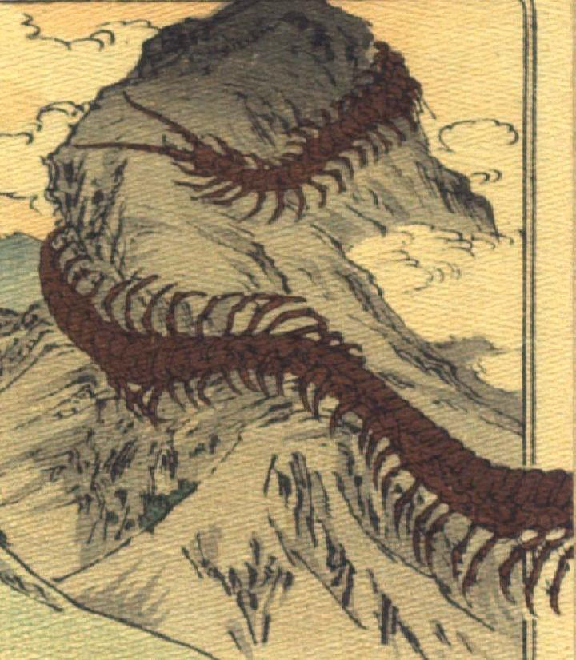

大百足。全身が茶色い、巨大な百足が山肌を這い登っている。上半身は山頂に巻きつき、下半身は山裾に伸びている。
著作者：J.Dautremer／出典：親書誌：U426_nichibunken_0118：Monseigneur sac de riz／日付：2006／資源識別子：U426_nichibunken_0118_0004_0000
Copyright (c)2010- International Research Center for Japanese Studies, Kyoto, Japan. All rights reserved.